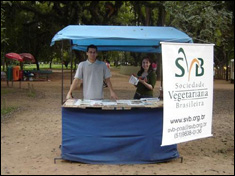
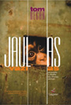

Todos os domingos no Brique da Redenção, das 9hs às 18hs com venda de livros, camisetas, bottons e adesivos, além de muita informação para os vegetarianos, aspirantes a vegetarianos e defensores dos animais. Também aos sábados na Feira Ecológica do Bom Fim, das 8hs às 15hs.

|  |
Tom Regan, uma das maiores autoridades em direitos e ética dos animais, vai ser um dos palestrantes no 1° Congresso Vegetariano Brasileiro e Latino-Americano que ocorrerá em São Paulo de 04 a 08 de agosto de 2006. |
08.04.2006
Evento vegetariano ocorrido no último sábado, com o apoio da Svb-Poa, foi um sucesso, e promete repeteco.
10.04.2003
Blá, blá, blá, blá, blá, blá, blá, blá, blá, blá, blá, blá, blá, blá, blá, blá, blá, blá, blá.
10.04.2003
Blá, blá, blá, blá, blá, blá, blá, blá, blá, blá, blá, blá, blá, blá, blá, blá, blá, blá, blá.
Sabryna Tosta, graduanda em Direito, que está fazendo seu trabalho de conclusão sobre Ética Animal, nos presenteia com o artigo "Carne: O Mito". Confira!
Os panfletos distribuídos gratuitamente na banquinha da Svb estão à disposição aqui no site para download. Foram adicionados os seguintes panfletos:
- Criação Industrial de Animais;
- De onde vem..?;
- O cálcio na alimentação vegetariana;
- O ferro na alimentação vegetariana;
- Proteínas na alimentação vegetariana.